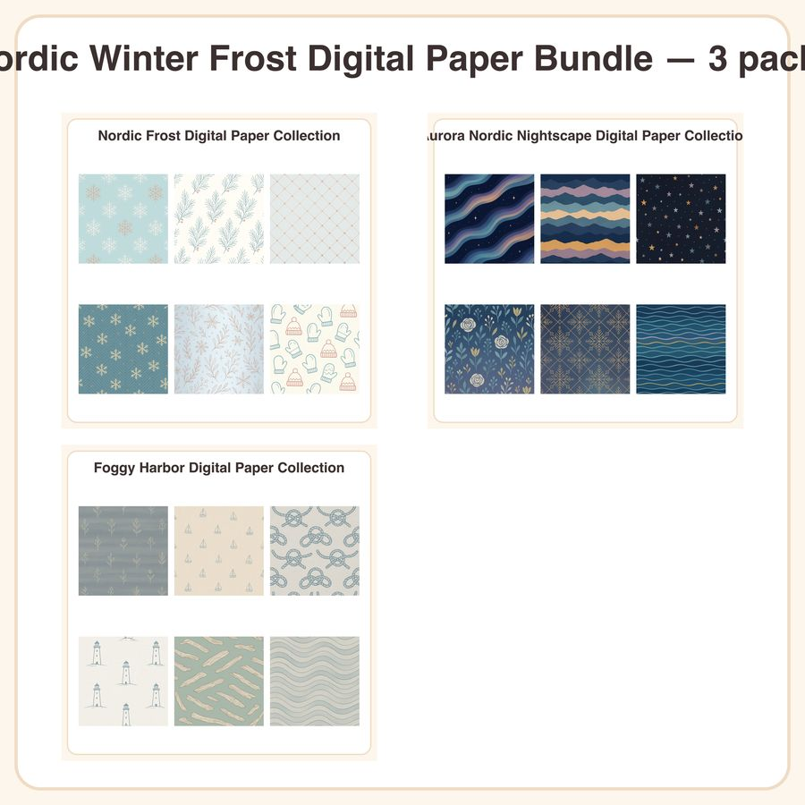

$8.99
View on EtsyCozy up your winter projects with the Nordic Winter Frost Bundle — three full digital paper collections in one discounted download, united by a frosty palette of icy blues, soft greys, muted lavenders, and hints of rose gold. What's included: • Nordic Frost Digital Paper Collection • Aurora Nordic Nightscape Digital Paper Collection • Foggy Harbor Digital Paper Collection • Each collection includes multiple seamless 12x12in patterns • High-res JPG files at 300dpi, ready to print or use digitally Style: flat vector minimalism with thin, consistent line weight — clean Nordic-inspired motifs in a cohesive icy color story, designed to seamlessly repeat. How to use: Print for winter cards, gift wrap, and planner covers Layer into digital scrapbook pages or journals Use as backgrounds for invitations, tags, and stationery Great for small-batch printed products like notebooks or greeting cards License: Personal and small-business commercial use permitted for finished physical or digital products, up to 500 units sold. Reselling, sharing, or redistributing the digital files themselves (as-is) is not permitted. A note on process: these designs were created by our shop with the help of AI tools, then curated and arranged into cohesive collections for your crafting projects. Instant download — no physical item will be shipped. Files delivered as a zip folder after purchase.